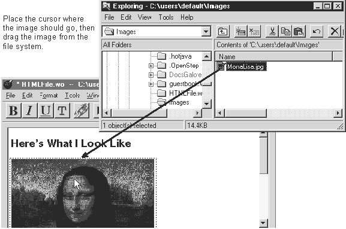

Table of Contents
Table of Contents
 Previous Section
Previous Section
Table of Contents
Previous Section
In the component window, place the cursor where you want the image to appear.
Locate the image in the file system.
Drag the image onto the page.

WebObjects Builder supports .jpeg, .gif, .tiff, .eps, and .bmp images.
By default, WebObjects Builder copies the image into the component directory unless you are dragging from a shared directory. See "Sharing Resources."
To set an image for the page background, use the page inspector. See "Setting Page Attributes."
 Next Section
Next Section